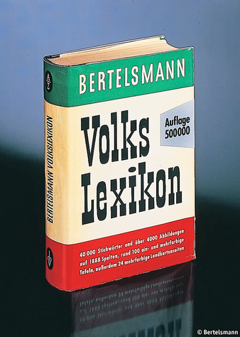
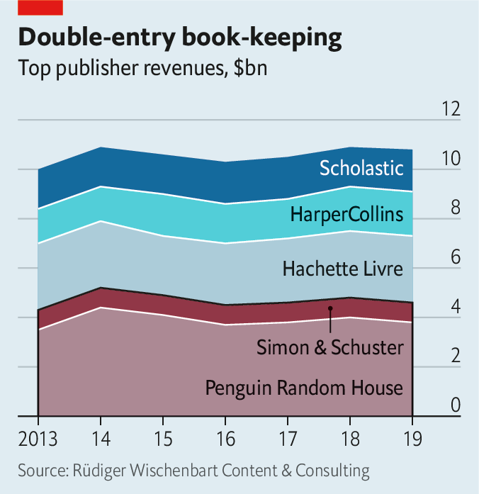
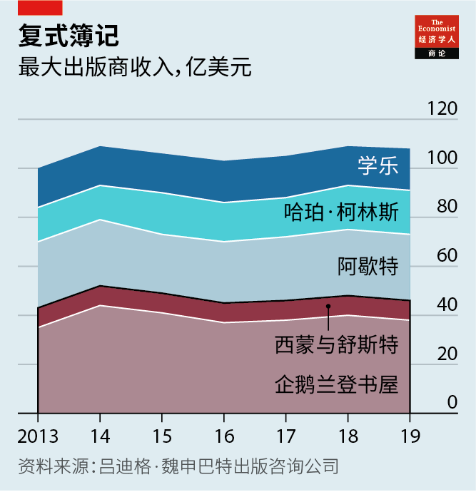

2020-12-08T14:26:02+00:00
Publishing
出版业
出版業
Book-binding
图书装订
圖書裝訂
Bertelsmann snaps up Simon & Schuster
贝塔斯曼一举拿下西蒙与舒斯特
貝塔斯曼一舉拿下西蒙與舒斯特

IN THE DAYS before Thanksgiving two top contenders emerged for Simon & Schuster, the fifth-biggest English-language book publisher by revenues, from ViacomCBS, an American media group. On November 25th Bertelsmann gained the upper hand. With an offer of $2.2bn the German parent of Penguin Random House (PRH), the largest publisher by a Tolstoyan margin, outbid News Corp, Rupert Murdoch’s media group, whose catalogue contains HarperCollins, ranked third (see chart).
感恩节前夕，意欲收购美国媒体集团ViacomCBS旗下全球第五大（以营收计）英语图书出版商西蒙与舒斯特（Simon & Schuster）的两大竞争者浮现。11月25日，贝塔斯曼集团（Bertelsmann）占得上风。它是营收遥遥领先的全球最大出版商企鹅兰登书屋（Penguin Random House）的德国母公司，出价22亿美元，高于默多克的媒体集团新闻集团（News Corp）的出价。新闻集团旗下拥有排名第三的出版商哈珀·柯林斯（HarperCollins）（见图表）。
感恩節前夕，意欲收購美國媒體集團ViacomCBS旗下全球第五大（以營收計）英語圖書出版商西蒙與舒斯特（Simon & Schuster）的兩大競爭者浮現。11月25日，貝塔斯曼集團（Bertelsmann）佔得上風。它是營收遙遙領先的全球最大出版商企鵝蘭登書屋（Penguin Random House）的德國母公司，出價22億美元，高於默多克的媒體集團新聞集團（News Corp）的出價。新聞集團旗下擁有排名第三的出版商哈珀·柯林斯（HarperCollins）（見圖表）。
A merger with Simon & Schuster would give PRH almost one-third of English-language book sales. That is more than double the market share of its closest rival, Hachette Livre, owned by Lagardère, an ailing French conglomerate. (Vivendi, a French group that is Lagardère’s biggest shareholder, also briefly vied for Simon & Schuster.) In America the merged biblio-behemoth would control 70% of the market for literary fiction.
与西蒙与舒斯特合并将使企鹅兰登占到全球英语图书销量的近三分之一。这是紧随其后的竞争对手阿歇特出版公司（Hachette Livre）市场份额的两倍多，后者的母公司为陷入困境的法国企业集团拉加代尔（Lagardère）。拉加代尔最大的股东法国集团维旺迪（Vivendi）也曾一度参与争夺西蒙与舒斯特。在美国，合并后的这个图书出版巨兽将控制虚构类文学作品市场70%的份额。
與西蒙與舒斯特合并將使企鵝蘭登佔到全球英語圖書銷量的近三分之一。這是緊隨其後的競爭對手阿歇特出版公司（Hachette Livre）市場份額的兩倍多，後者的母公司為陷入困境的法國企業集團拉加代爾（Lagardère）。拉加代爾最大的股東法國集團維旺迪（Vivendi）也曾一度參與爭奪西蒙與舒斯特。在美國，合并後的這個圖書出版巨獸將控制虛構類文學作品市場70%的份額。
Authors and agents worry that the enlarged PRH may become ever more dominant in distribution—and that market concentration could lead to an excessive focus on bestsellers such as Michelle Obama’s memoir of her time as America’s first lady (which was published by a PRH subsidiary) at the expense of niche titles that are no less worthy. Robert Thomson, News Corp’s boss, is certain, for his part, that the Bertelsmann deal will alert trustbusters. Earlier this year America’s Department of Justice thwarted a merger of Cengage and McGraw-Hill, two publishers of educational books. Any delay would be bad news for ViacomCBS, which needs the money badly for investments in video-streaming, where it lags behind rivals such as Netflix, Disney or AT&T, a telecoms giant that owns HBO.
作家和代理商们担心，扩张后的企鹅兰登可能会日益主导图书分销，而市场高度集中可能会导致过分重视畅销书，比如米歇尔·奥巴马对自己身为美国第一夫人时期的回忆录（由企鹅兰登的子公司出版），而忽略同样有价值的小众书作。新闻集团的老板罗伯特·汤姆森（Robert Thomson）就深信，贝塔斯曼的这宗收购将惊动反垄断机构。今年早前，美国司法部阻止了两家教育图书出版商圣智（Cengage）和麦格劳希尔（McGraw-Hill）的合并。此次收购的任何延误对ViacomCBS来说都是坏消息，因为它迫切需要资金投资视频流媒体业务。ViacomCBS在这方面落后于奈飞（Netflix）、迪士尼或拥有HBO的电信巨头AT&T等竞争对手。
作家和代理商們擔心，擴張後的企鵝蘭登可能會日益主導圖書分銷，而市場高度集中可能會導致過分重視暢銷書，比如米歇爾·奧巴馬對自己身為美國第一夫人時期的回憶錄（由企鵝蘭登的子公司出版），而忽略同樣有價值的小眾書作。新聞集團的老闆羅伯特·湯姆森（Robert Thomson）就深信，貝塔斯曼的這宗收購將驚動反壟斷機構。今年早前，美國司法部阻止了兩家教育圖書出版商聖智（Cengage）和麥格勞希爾（McGraw-Hill）的合并。此次收購的任何延誤對ViacomCBS來說都是壞消息，因為它迫切需要資金投資視頻流媒體業務。ViacomCBS在這方面落後於奈飛（Netflix）、迪士尼或擁有HBO的電信巨頭AT&T等競爭對手。
Thomas Rabe, Bertelsmann’s boss, says he is confident that regulators in America and other countries will bless the deal. They rarely block mergers that only reduce the number of big players from five to four. The last big union, Bertelsmann’s takeover in 2013 of Penguin, did not fall foul of antitrust guardians. Moreover, the leading five have lost market share in recent years to smaller rivals, not to mention Amazon, which these days not only sells books (as well as just about everything else) but also publishes them.
贝塔斯曼的老板托马斯·拉贝（Thomas Rabe）表示，他相信美国和其他国家的监管机构会支持这宗收购。它们很少会阻止那种只是把某个市场上的大公司数量从五个减少到四个的并购。上一次大型收购，也就是贝塔斯曼在2013年收购企鹅集团，并未受到反垄断监管机构的阻拦。而且五大出版集团近些年也被较小的竞争对手夺去了部分市场份额，被亚马逊抢走的份额就更不用说了。亚马逊现在不仅销售图书（以及其他几乎一切商品），还出版图书。
貝塔斯曼的老闆托馬斯·拉貝（Thomas Rabe）表示，他相信美國和其他國家的監管機構會支持這宗收購。它們很少會阻止那種只是把某個市場上的大公司數量從五個減少到四個的併購。上一次大型收購，也就是貝塔斯曼在2013年收購企鵝集團，並未受到反壟斷監管機構的阻攔。而且五大出版集團近些年也被較小的競爭對手奪去了部分市場份額，被亞馬遜搶走的份額就更不用說了。亞馬遜現在不僅銷售圖書（以及其他幾乎一切商品），還出版圖書。
That still leaves the question of whether the deal is a good one for Bertelsmann. The price was heftier than even ViacomCBS expected. Covid-19 initially hurt book sales, as it did other discretionary spending. “The first five weeks [of the pandemic] were very tough,” admits Brian Murray, chief executive of HarperCollins.
但仍然有个问题——这对贝塔斯曼而言是否算一宗好交易。它的出价甚至比ViacomCBS期望的还要高。和其他非必要消费品一样，图书的销售最初也受到了新冠疫情的打击。“（疫情的）头五周非常艰难。” 哈珀·柯林斯的首席执行官布莱恩·默里（Brian Murray）承认。
但仍然有個問題——這對貝塔斯曼而言是否算一宗好交易。它的出價甚至比ViacomCBS期望的還要高。和其他非必要消費品一樣，圖書的銷售最初也受到了新冠疫情的打擊。“（疫情的）頭五周非常艱難。” 哈珀·柯林斯的首席執行官布萊恩·默里（Brian Murray）承認。
But with their pantries full, self-isolators turned to fiction for escapism and edification. “People are always predicting the decline of book publishing, but it has actually been very resilient,” says David Steinberger, chief executive of Arcadia Publishing, a publisher of history books.
但随着隔离在家的人们囤足了食品，他们又转向小说以逃避现实和寻求启迪。“人们一直预测图书出版会走下坡路，但它实际上却很坚韧。”历史书籍出版商阿卡迪亚出版公司（Arcadia Publishing）的首席执行官戴维·斯坦伯格（David Steinberger）说。
但隨着隔離在家的人們囤足了食品，他們又轉向小說以逃避現實和尋求啟迪。“人們一直預測圖書出版會走下坡路，但它實際上卻很堅韌。”歷史書籍出版商阿卡迪亞出版公司（Arcadia Publishing）的首席執行官戴維·斯坦伯格（David Steinberger）說。
And Simon & Schuster is a prestigious prize. It was originally set up in 1924 to publish crosswords, but went on to represent Ernest Hemingway, F. Scott Fitzgerald and Tom Wolfe. This year it made waves with the publication of “Rage”, a ferocious account of Donald Trump’s White House by Bob Woodward, a far-famed journalist, as well as a tell-all memoir by the president’s niece, a psychologist.
而西蒙与舒斯特这个竞逐目标享有盛名。这家公司成立于1924年，最初的业务是出版填字游戏，后来出版了欧内斯特·海明威、斯科特·菲茨杰拉德和汤姆·沃尔夫的作品。今年它出版了著名记者鲍勃·伍德沃德（Bob Woodward）激烈展现特朗普主政的白宫的《愤怒》（Rage）和特朗普的心理学家侄女所写的爆料回忆录，引起轰动。
而西蒙與舒斯特這個競逐目標享有盛名。這家公司成立於1924年，最初的業務是出版填字遊戲，後來出版了歐內斯特·海明威、斯科特·菲茨傑拉德和湯姆·沃爾夫的作品。今年它出版了著名記者鮑勃·伍德沃德（Bob Woodward）激烈展現特朗普主政的白宮的《憤怒》（Rage）和特朗普的心理學家侄女所寫的爆料回憶錄，引起轟動。
Nabbing Simon & Schuster is Bertelsmann’s second coup in the space of a week. On November 17th American and Canadian readers set a record for first-day sales, snapping up 890,000 copies of a new memoir by Mrs Obama’s husband, also published by a PRH subsidiary. ■
拿下西蒙与舒斯特是贝塔斯曼在一周内的第二场胜利。11月17日，在美国和加拿大读者的抢购下，奥巴马的最新回忆录单日售出89万本，创下了图书首发日销量新高。这本书同样由企鹅兰登的子公司出版。
拿下西蒙與舒斯特是貝塔斯曼在一周內的第二場勝利。11月17日，在美國和加拿大讀者的搶購下，奧巴馬的最新回憶錄單日售出89萬本，創下了圖書首發日銷量新高。這本書同樣由企鵝蘭登的子公司出版。